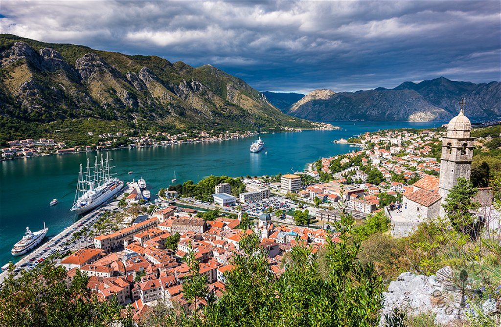
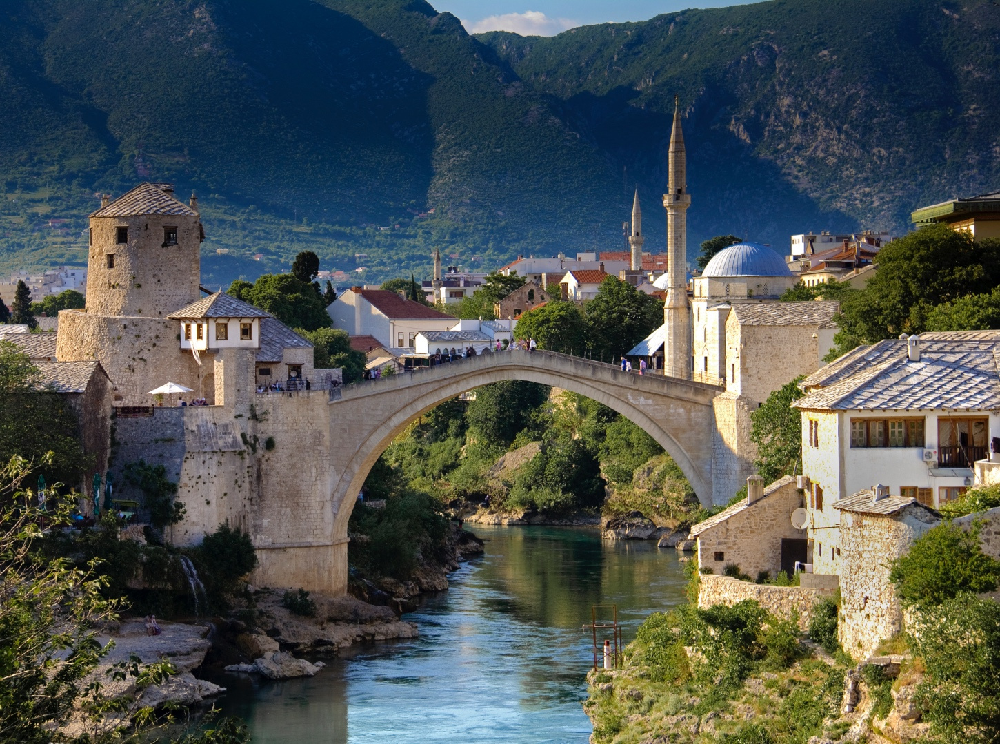
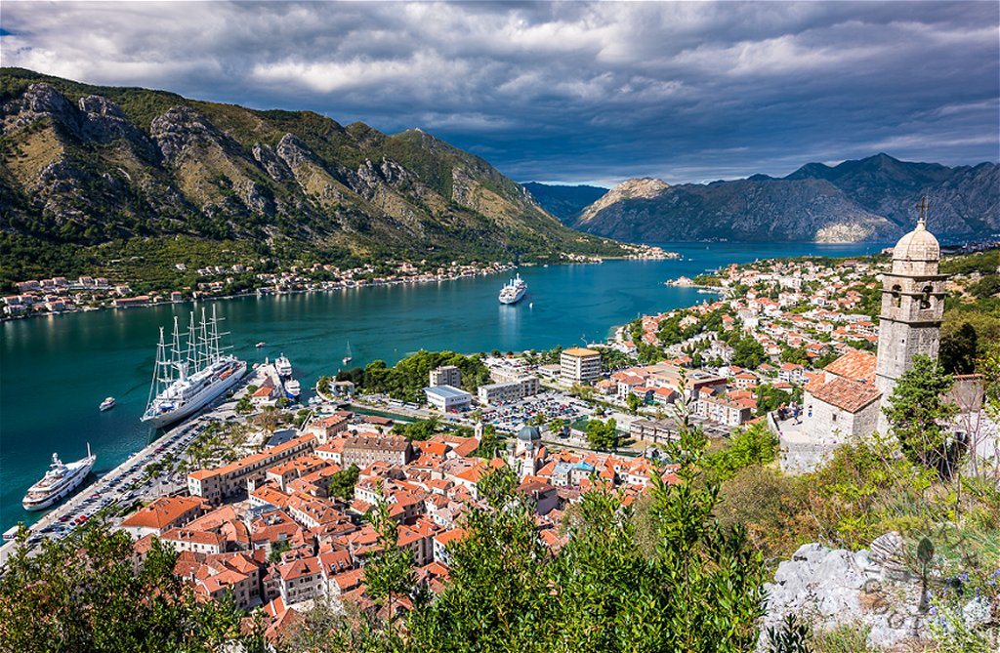
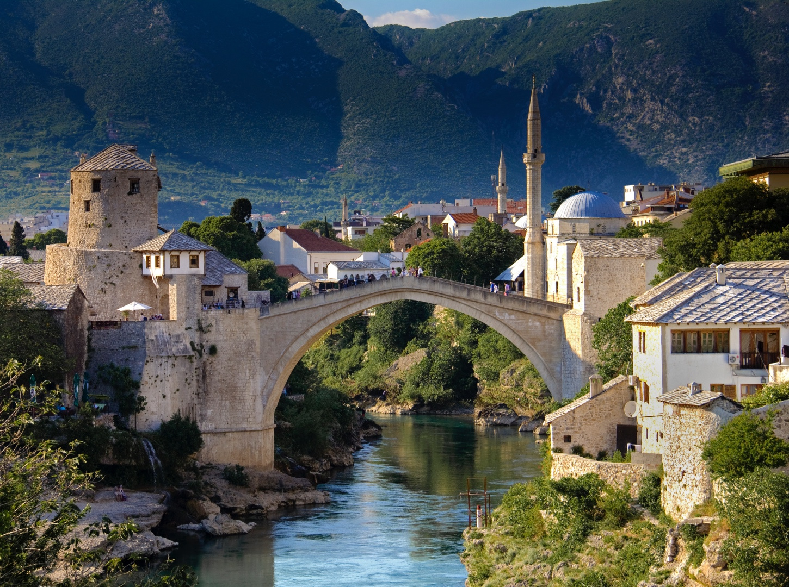

Balkán roadtrip - kelet
Legtöbbünknek negatív asszociácója van akkor, amikor valaki azt mondja: Balkán.
Döntsük le ezt!
Időtartam
9 nap
Várható költség
70 000 Ft
Érintett országok száma
5 darab:
Szerbia, Észak-Montenegró, Albánia, Montenegró, Bosznia-Hercegovina
Leírás
A túránkat Budapestről indítjuk meg egy szombat reggel, ahonnan egyből Belgrádba megyünk. Ott átvesszük a szállásunkat, ott töltjük a délutánt és a másnapot is. Hétfőn reggel indulunk tovább Szkopjéba, ahova a délutáni órákban érkezünk meg. Itt töltjük a hétfő délutánt, körbenézünk, majd másnap, kedd reggel megyünk tovább Tiranába, ahol ott az aznapot, illetve a másnapot töltjük. Szerda reggel megyünk tovább Budvába, ahol a szokásos délutánunk lesz, illetve másnap elnézünk Kotorba. Pénteken reggel indulunk tovább Szarajevóba, ahol az aznapot, majd a másnapot töltjük együtt. Vasárnap délelőtt indulunk Pestre, ahova a késő délutáni órákban fogunk megérkezni.
Fotók

 


